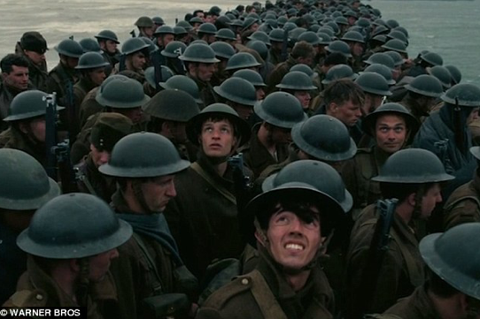
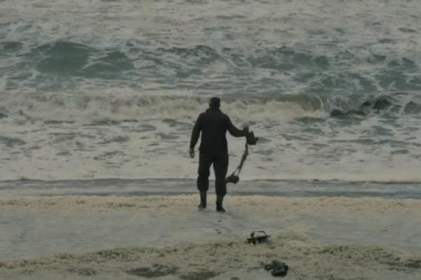
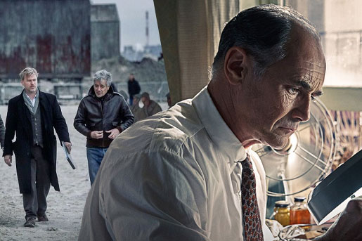

-

Dunkirk’s Cillian Murphy: Christopher Nolan cast Harry Styles for his talent
When it was announced that Harry Styles was on the Dunkirk cast, it was hard to believe it was not for any reason other than the inevitable ticket sales boost, despite a Christopher Nolan movie starring Cillian Murphy, Tom Hardy and more really needing no extra hype.
Murphy has insisted however that he believes Styles, who has never acted in a feature film before, was simply right for the part... Read More »
-

One smirking extra accused of 'ruining' the trailer for WWII film Dunkirk
Eagle-eyed viewers noticed something quite peculiar during the first trailer for Christopher Nolan's highly-anticipated Dunkirk.
One extra among a sea of 1,500 supporting artists broke character as he was spotted smirking while the rest recoiled in fear at the sound of incoming German bombers flying above them in the 56-second-long preview... Read More »
-

Christopher Nolan’s ‘Dunkirk’ Teaser Overwhelms Rival Trailers on Twitter
It clocks in at just 66 seconds, and much of that time is taken up by text, but the teaser for director Christopher Nolan‘s upcoming “Dunkirk” offers just enough of a taste of the World War II story’s epic scale to pique moviegoers’ interest.
The spot’s tantalizing vibe helped it dominate the conversation on social media last week, as it topped all other new trailers on Twitter by a large margin, according to data analytics firm ListenFirst Media... Read More »
-

‘Dunkirk’: Mark Rylance Praises Christopher Nolan´s “Pure War Film”
Christopher Nolan is one of—if not the—biggest filmmakers working today. When you talk about directors who can walk into a studio, say “I want to make this,” and be handed an instant greenlight and an enormous budget, Nolan is at the very top of the list.
Even Steven Spielberg has trouble getting his films financed these days, but having proved himself consistently reliable both with critics and at the box office—and with original material to boot—Nolan’s pretty much got carte blanche at this point... Read More »
-
Dunkirk: First Images from the Set of Christopher Nolan’s New Movie
Christopher Nolan has emerged in the last decade as one of the most important and closely watched active film directors. With his Dark Knight trilogy, Inception, and Interstellar — and even his early work like Memento and The Prestige –– Nolan has shown himself an exceptional artist, capable of connecting with all sorts of audiences.
Nolan’s next film is Dunkirk, a World War II drama focused on the evacuation of the French city of Dunkirk in May of 1940, following the Nazi invasion of France in the early stages of the war... Read More »